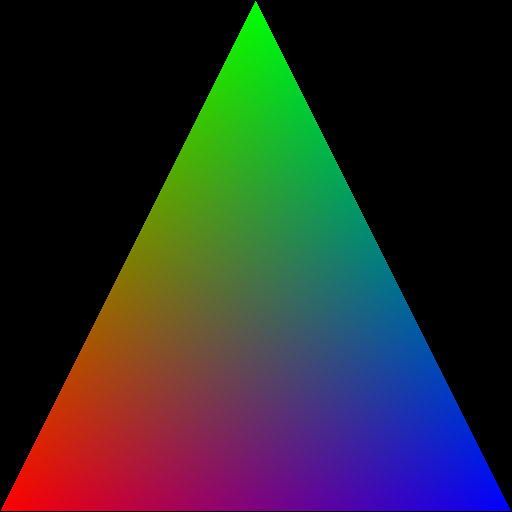

DRTK – Differentiable Rendering Toolkit#
DRTK is a Python package built on top of PyTorch, offering differentiable rasterization functionality. We focus on rasterization due to its speed, providing functionality which is typically common in real-time graphics, while leaving shading and lighting/material models for user implementation.
Rasterization is a widely used rendering technique due to its speed and efficiency, especially for real-time applications. However, it presents challenges when used in differentiable rendering pipelines, particularly at visibility boundaries, where non-differentiable operations, such as discrete pixel coverage and occlusions, occur. DRTK implements a novel approach to computing gradients at these visibility discontinuities described in Rasterized Edge Gradients: Handling Discontinuities Differentiably, overcoming the limitations inherent in rasterization’s fixed-grid structure and z-buffering. DRTK keeps the rasterization process intact and efficient while enabling gradient propagation through occlusion boundaries and geometry intersections. DRTK provides a set of differentiable components to build custom differentiable rendering pipelines, like the following:
model → transform → rasterize → render → interpolate → CUSTOM SHADING → rendered image → edge_grad → LOSS FUNCTION
transform: Projects 3D vertex positions onto the image plane of the camera.
rasterize: Performs rasterization, mapping output pixels to triangles.
render: Computes depth and barycentric images.
interpolate: Interpolates arbitrary vertex attributes.
edge_grad: Computes gradients at discontinuities.
CUSTOM SHADING and LOSS FUNCTION: User-defined components for shading and loss calculation.
Hello Triangle!#
Here’s a simple “Hello Triangle” example with DRTK:
import drtk
import torch as th
from torchvision.utils import save_image # to save images
# create vertex buffer of shape [1 x n_vertices x 3], here for triangle `n_vertices` == 3
v = th.as_tensor([[[0, 511, 1], [255, 0, 1], [511, 511, 1]]]).float().cuda()
# create index buffer
vi = th.as_tensor([[0, 1, 2]]).int().cuda()
# rasterize
index_img = drtk.rasterize(v, vi, height=512, width=512)
# compute baricentrics
_, bary = drtk.render(v, vi, index_img)
# we won't do shading, we'll just save the baricentrics and filter out the empty region
# which is marked with `-1` in `index_img`
img = bary * (index_img != -1)
save_image(img, "render.png")

Installation#
To build and install the DRTK package as a wheel:
pip install wheel
python setup.py bdist_wheel
pip install dist/drtk-<wheel_name>.whl
For in-place builds, useful for development:
python setup.py build_ext --inplace -j 1
Requirements#
Cure dependencies:
CUDA Toolkit
PyTorch (>= 2.1.0)
numpy
Some examples and tests may also require:
torchvision
opencv-python
Contributing#
See the CONTRIBUTING file for how to help out.
License#
DRTK is MIT licensed, as found in the LICENSE file.
Citation#
When using DRTK in academic projects, please cite:
@article{pidhorskyi2024rasterized,
title={Rasterized Edge Gradients: Handling Discontinuities Differentiably},
author={Pidhorskyi, Stanislav and Simon, Tomas and Schwartz, Gabriel and Wen, He and Sheikh, Yaser and Saragih, Jason},
journal={arXiv preprint arXiv:2405.02508},
year={2024}
}